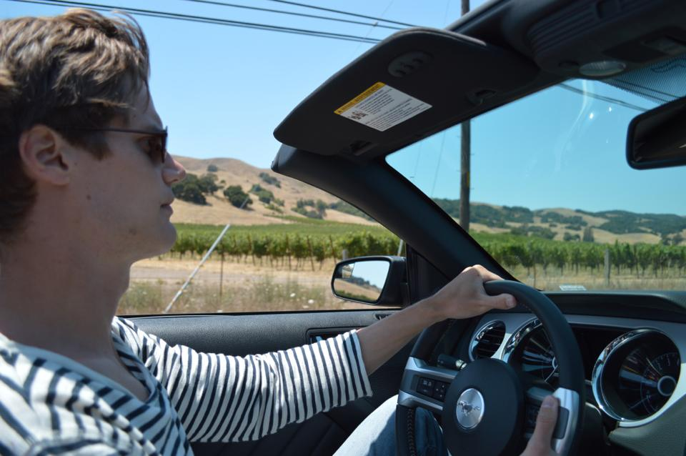

Utveckla din riskförståelse!
Är du medveten om vad risk innebär i modern tid? Är du anpassad efter din risk, eller är din risk anpassad efter dig? Är du trygg med vilka nyckeltal som verkligen räknas när det gäller att förebygga såväl som maximera risk?
Konferensen Risk Development & Synchronization ger dig de rätta verktygen och presenterar best practice-case så att du kan djuplänka inslag av risk till din kärnverksamhet.
Ur programmet
-
Risk nu och då
-
Recension: Risky Business med Tom Cruise
-
Ricky Brosch nu och då
-
Rix FM - Radio på svenska
-
Pain Riche med Richie Regher
...samt workshops, Q&A och mycket annat
Till anmälan
Utveckla din riskförståelse!
Är du medveten om vad risk innebär i modern tid? Är du anpassad efter din risk, eller är din risk anpassad efter dig? Är du trygg med vilka nyckeltal som verkligen räknas när det gäller att förebygga såväl som maximera risk?
Konferensen Risk Development & Synchronization ger dig de rätta verktygen och presenterar best practice-case så att du kan djuplänka inslag av risk till din kärnverksamhet.
Ur programmet
-
Risk nu och då
-
Recension: Risky Business med Tom Cruise
-
Ricky Brosch nu och då
-
Rix FM - Radio på svenska
-
Pain Riche med Richie Regher
...samt workshops, Q&A och mycket annat
Tid & plats
6 december 2014 kl 15.30
Scandic Anglais
Humlegårdsgatan 23
102 44 Stockholm
Ladda ner programmet som pdf
Kostnad
Konferensen är kostnadsfri, men vid "no show" debiteras en avgift om 985 kr.
Övrigt
Dryck (både alkoholfulla och alkoholfria alternativ) finns tillgängliga till självkostnadspris, och så även mat av lättare slag. Konferenslokalen accepterar betalkort.
Tid & plats
6 december 2014 kl 15.30
Scandic Anglais
Humlegårdsgatan 23
102 44 Stockholm
Ladda ner programmet som pdf
Kostnad
Konferensen är kostnadsfri, men vid "no show" debiteras en avgift om 985 kr.
Övrigt
Dryck (både alkoholfulla och alkoholfria alternativ) finns tillgängliga till självkostnadspris, och så även mat av lättare slag. Konferenslokalen accepterar betalkort.

Konferensen arrangeras av Som Tåget Competence™
Utvalda föreläsare
Andreas Laestadius
Clinical Research Associate II, ICON plc
Andreas Laestadius är för de flesta känd som "Riskens fader" ("Risky papa" för den internationella publiken). Med succérörelsen Riskis & Lestis förändrade han själva innebörden av risk för en hel generation.
Föreläsningstitel: Smittorisk - en risk värd att dö för?
Anders Berggren
Technical Project Manager, BAE Systems Hägglunds
Anders Berggren har spenderat mycket tid såväl inom- som utomhus. Med uttalanden som "Stor frisk i liten damm" och "Risk så spelar vi" har han etablerat sig som en maktfaktor på den internationella riskscenen.
Föreläsningstitel: Risken att bli påkörd av en panter - Ett livsöde
Björn Allan Lundgren
Associate, Praleñdo

Björn Allan Lundgren har flera års erfarenhet av både maximering och minimering av risk. Han har en nära relation till Mattias Frisk.
Föreläsningstitel: Riskminimering - hur ser man när människor ljuger? Björn A. Lundgren redogör
David Broman
Management Consultant, Capgemini Consulting
David Broman har coachat flertalet framstående risktagare. Bland dessa finner vi namn såsom Sture Bergwall och Birgit Friggebo.
Föreläsningstitel: Risk, huh! What is it good for? Absolutely nothing!
Ludwig Gsänger
AssMan, Öhrlings PricewaterhouseCoopers
Ludwig Gsänger har körkort och egen lägenhet.
Föreläsningstitel: Risk, och såna grejer